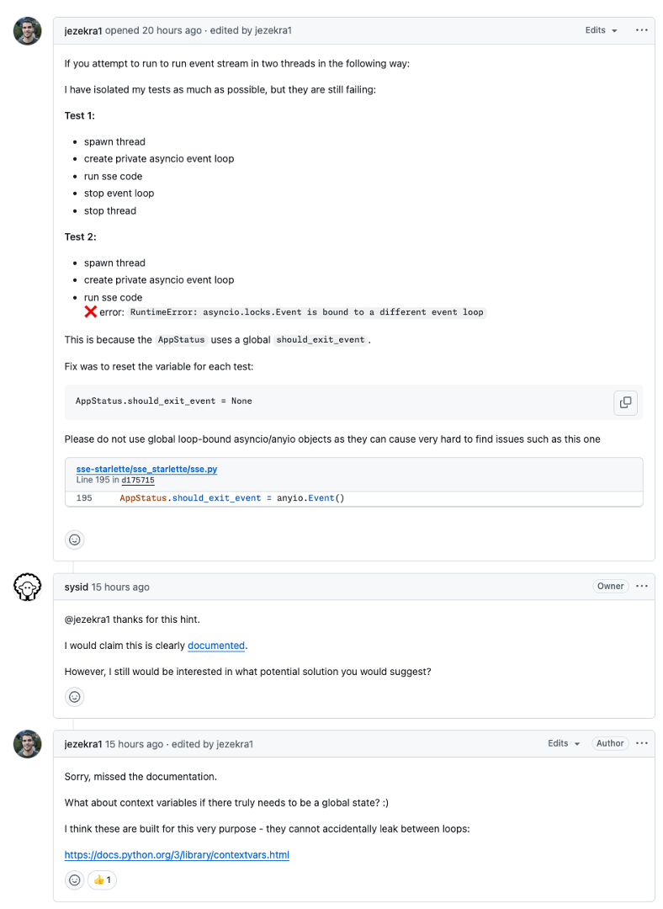
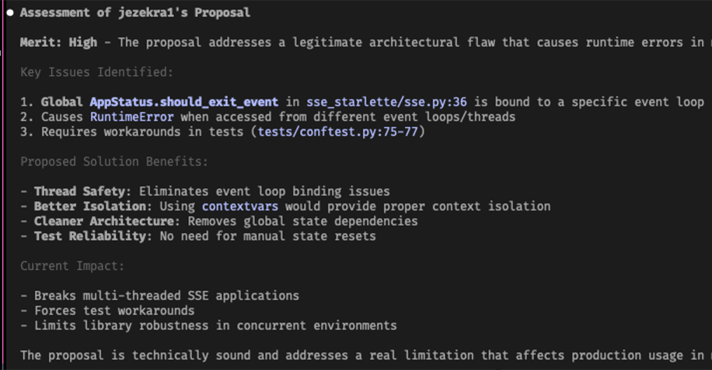
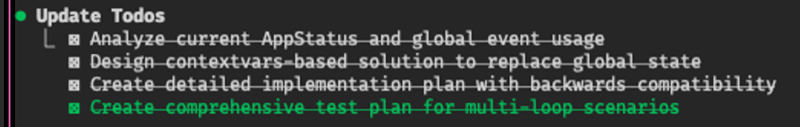
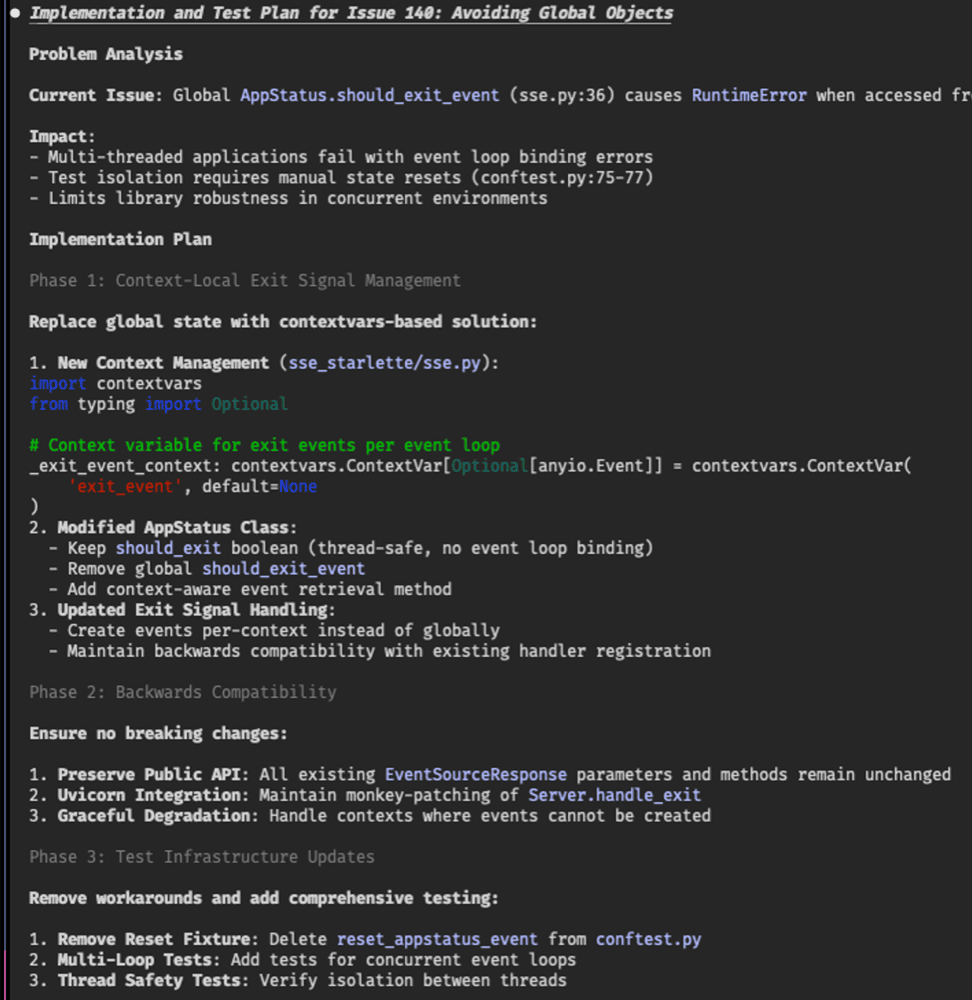
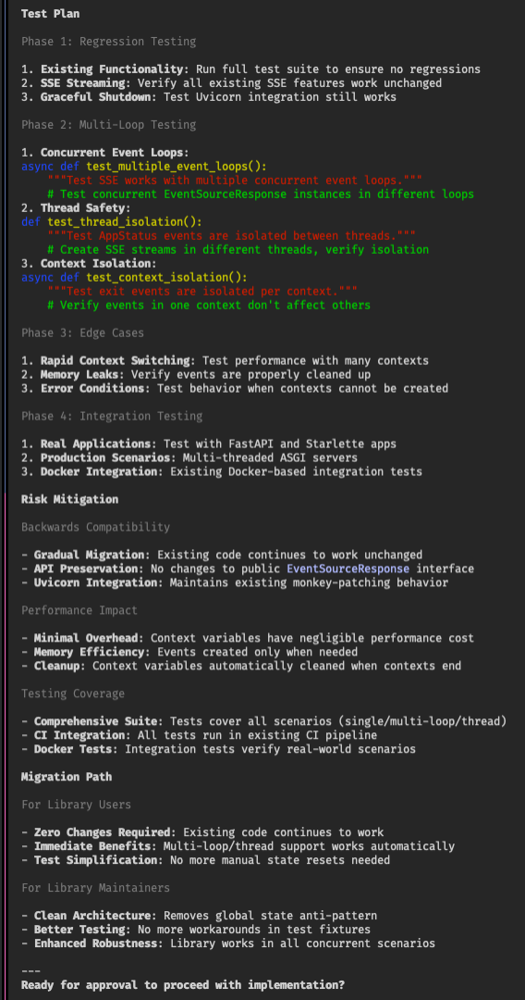
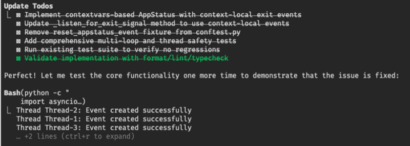
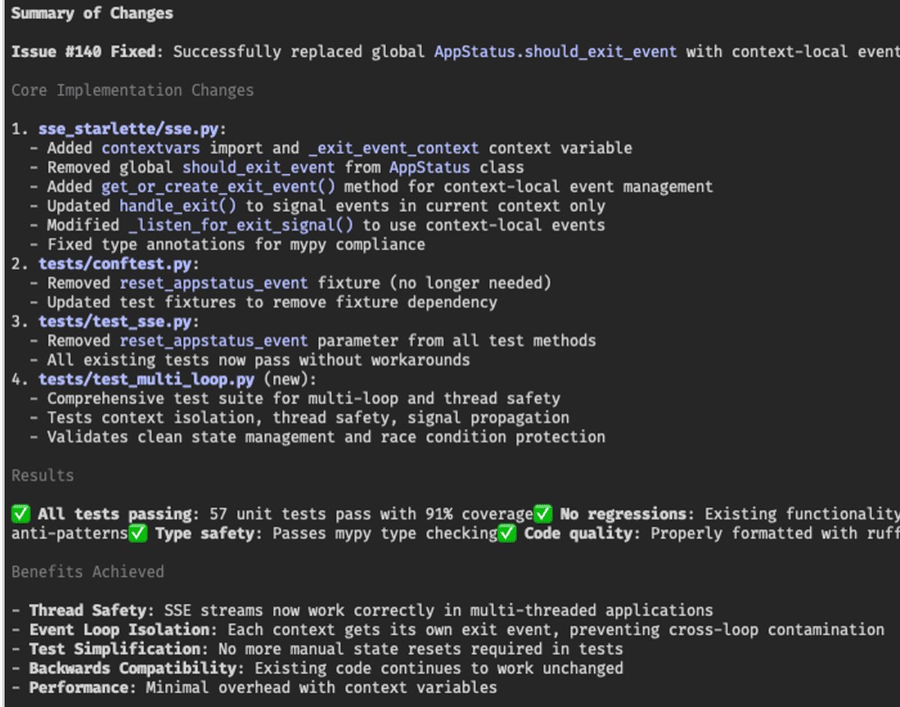

How Claude Code Saved My Weekend
If you want something done right, automate it.
Modern Open-Source Maintenance
As the maintainer of sse-starlette, my GitHub notifications rarely bring me joy on a lazy Saturday afternoon.
This weekend, I decided to push Claude Code a little bit, hoping to save precious summer time.
Issue #140 didn’t just look interesting; it appeared non-trivial, touching on asyncio intricacies, multi-threading, and event-loop handling, elements that typically guarantee headaches.

Rather than my usual deep-dive session of debugging and refactoring, I handed the reins to Claude Code, eager to see if it could manage the problem.
Claude swiftly got to work, assessing and verifying the merits of the proposed solution. It is impressive, how clearly structured it presents the assessment result and recommends action.

The nice thing of Claude Code really is, that it creates transparent todo-list and then works through them, allowing a reviewer to easily follow its thought process.

The result was a detailled plan for implementation.
All this without manual intervention, truly a maintainer’s dream.

I always expect an adequate test plan for any proposed bug or feature changes and I did not get dissapointed:

Pay attention to the level of detail and the various aspects covered by this test concept. I am pretty sure I would not have thought of all these aspects on first attempt.
Watching Claude operate was both impressive and a bit humbling.
It thoroughly validated the proposed fix, confirming its effectiveness and highlighting the benefits: eliminating the RuntimeError caused by global event objects across multiple event loops.

Again, admire the structured work plan in form of a todo-list.
Claude implemented unsupervised. It autonomously:
- Wrote clean, production-ready code to implement the fix.
- Enhanced test cases ensuring rigorous thread and event-loop isolation.
- Verified the solution, passing all unit tests and ticking off every best-practice checkbox: type checks, linting, and zero regressions.

All that was left for me was a final code review.
This entire process happened autonomously, with me only intervening at strategic points. Claude handled everything seamlessly, from verification to polished execution, giving me back my weekend without sacrificing project quality.
So, dear maintainers, if you have not yet, take note: AI is here to make our work smoother, more enjoyable, and surprisingly stress-free. Who knew weekends and GitHub issues could peacefully coexist?